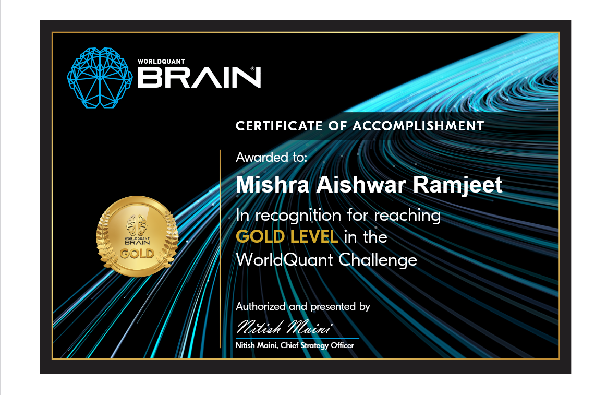

What WorldQuant is
WorldQuant is a quantitative investment firm - they trade financial markets using statistical models rather than human judgment. Brain is their open research platform: anyone can sign up, get access to institutional-grade market data, and try to build trading signals. Good contributors get scored, ranked, and occasionally recruited.
The platform is essentially a talent funnel disguised as a sandbox, which is what makes the scoring meaningful. You’re not marking your own homework.
What an alpha is
An alpha is a formula that predicts, weakly and on average, which stocks will do better than others.
The word “weakly” is the whole discipline. Nobody finds a signal that’s right most of the time - if such a thing existed it would be arbitraged away within days. What you’re hunting for is something right slightly more often than chance, that holds up across thousands of stocks and years of history, and that isn’t just a repackaging of a signal everyone already trades.
A trivial example: stocks that fell hard last week tend to bounce slightly the next week. That’s a real effect, it’s tiny, it’s well known, and on its own it makes no money after transaction costs. A useful alpha is that idea’s more careful, less obvious cousin.
What made it hard
The failure mode isn’t finding nothing. It’s finding something that isn’t real.
Test enough formulas against historical data and some will look brilliant purely by chance. The platform guards against this - it checks that a signal isn’t too correlated with existing alphas, that its performance doesn’t come from one lucky period, that turnover isn’t so high the trading costs eat the return. Most of what I submitted didn’t survive those checks.
- Sharpe
- 1.14
- Returns
- 22.41%
- Turnover
- 81.59%
What the score means
Points accrue for alphas that pass out-of-sample validation and add something not already covered by the existing library. Gold is a cumulative threshold - 10,000+ points reflects sustained submissions over 2-3 months, not a single good idea.
The Research Consultant offer came off the back of that record.
Certificate
